Game proposal · AI for Design, Week 1 · Theme: Hallucination
HALLUCINATION HYSTERIA
By Micah · October 2026
Follow the arrows. Keep the rhythm. Find your way home.
You come to on a dim street at night with your headphones on, and the world won't hold still. Follow the clear arrows and the music’s beat to find your way home.
HallucinateClear
Drag to change the clarity. Your timing decides how much of your world you are hallucinating: a distorted view, or seeing things that aren't there, like the person below the OPEN sign. The notes stay sharp so you can see when to hit them.
01 / INTRODUCE THE GAME
Hallucination Hysteria
A short rhythm game where your timing decides how much the world can lie to you.
The player's experience: You play four arrow keys to the beat, copying patterns the world sings at you, like Friday Night Funkin' (FNF). Stay on beat and the scene sharpens; miss, and the streets and faces become distorted, while the arrows stay clear. Make it home with a clear head, or lose yourself to the hallucination.
Why "Hallucination Hysteria": The title names the theme and the feeling: a night where the world stops making sense and panic sets in. The alliteration also gives it the bounce of a rhythm-game title, like Friday Night Funkin'.
Ghost notes: In music, a ghost note is felt more than heard. In this game, ghost notes are hallucinated notes that aren't real, and learning to ignore them is how you get home.
At a glance:
Genre: rhythm game
Input: four arrow keys (or WASD)
Structure: an opening, three short stages, two endings
Session: short, about five minutes
Platform: desktop browser
02 / PRESENT YOUR CASE STUDY
Case study: Friday Night Funkin'
I studied my first short session of Friday Night Funkin' as a first-time FNF player, then compared it with what its creators say they intended.
The game and its creators: Friday Night Funkin' was created for the Ludum Dare 47 game jam (October 2020) by ninjamuffin99 (Cameron Taylor, programming), PhantomArcade (David Brown, animation and story), evilsk8r (art) and Kawai Sprite (Isaac Garcia, music and sound). It is now developed by The Funkin' Crew Inc.
Version I played: the browser version on itch.io, October 2026 (downloads listed as v0.8.6)
What I learned from the research: Friday Night Funkin' began as a weekend game-jam entry. ninjamuffin99 says he didn't care about the jam's theme, "Stuck in a loop"; he just needed an excuse to work on something, and on a whim chose a small rhythm game. The team expanded it into a demo released on Newgrounds and itch.io on November 1, 2020. Its influences are rhythm games like Dance Dance Revolution (DDR) and PaRappa the Rapper, and the team wanted to make a good game for the Newgrounds community. The creators were open about early problems: difficulty spikes, a purple arrow that could blend into backgrounds, and a camera zoom that could feel distracting. Two of those, the difficulty and the camera zoom, matched my own first session. What surprised me most is that the official itch.io page explains the whole rule in one line, but as a beginner I skipped it and learned by failing.
Why I chose this game: I found Friday Night Funkin' while browsing itch.io, one of the resources in the lesson's reference library. After trying other games, I was drawn to FNF because I had heard of it, I enjoy rhythm games like osu!, and its distinctive art style stood out. It was also among the highest-rated games I saw while browsing. I wanted to learn about its story and how a rhythm game could carry a story across songs. In my experience of osu!, I focus on individual songs; for my own game, I wanted the songs to form a connected narrative.
What I learned about story: The characters did not necessarily feel connected to me, but the themes of the music and the surrounding area contributed to the story. That is what I took into account when planning a different theme for each future battle scene in Hallucination Hysteria. I want the street, bus stop and bedroom to feel distinct through their music and setting, while the walk home connects them.
My approach: I was new to FNF, although I already enjoyed rhythm games like osu! I had never played DDR or PaRappa the Rapper, and I failed a lot before FNF's timing clicked.
Character names: Boyfriend is the player character’s name in Friday Night Funkin’. Girlfriend is his partner, and Daddy Dearest is her father and the opponent in Week 1. “Dad” below refers to Daddy Dearest. Character overview (Wikipedia).
Three meaningful moments
1. Figuring out what to do (my first song, Week 1 "Bopeebo" on Normal)
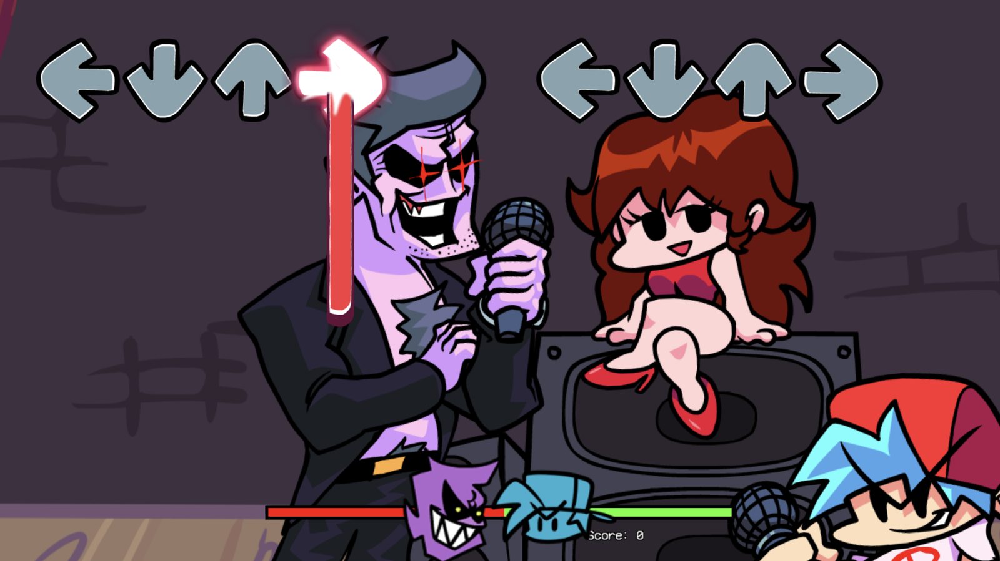
My first song. Daddy Dearest sings first while my four arrows wait on the right; the health bar starts in the middle and my score is 0.Screenshot from my personal time playing Friday Night Funkin' (The Funkin' Crew Inc.) on itch.io.
Saw/heard: Daddy Dearest singing in beeps, arrows scrolling up on his side, then arrows scrolling up on my side toward four gray outlines.
Seemed possible: I thought I should press each arrow as soon as it appeared, and at first I wasn't sure which side was mine.
I did: Pressed the keys the moment arrows showed up at the bottom of the screen.
Changed: Almost everything got the game's lowest rating (a swear word I'll call "Shoot") or missed, and my health bar dropped fast.
Understood afterward: You press when the moving arrow lines up with the gray outline at the top, not when it appears. Dad's arrows are a preview of mine.
2. My first miss
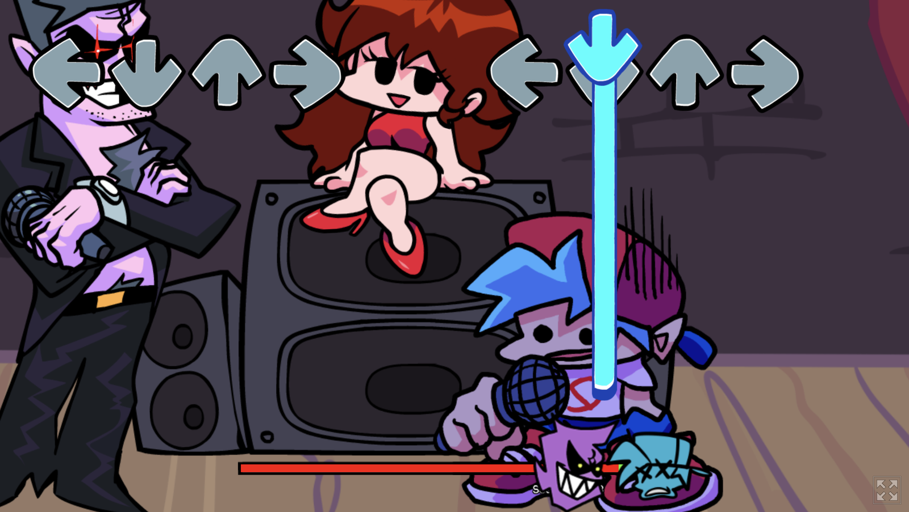
What a miss looks like: Boyfriend flinches into a purple-tinted pose, the red side of the health bar almost fills it, and his icon turns into a losing face.Screenshot from my personal time playing Friday Night Funkin' (The Funkin' Crew Inc.) on itch.io.
Saw/heard: A crunchy miss sound, Boyfriend flinching, and his voice cutting out so only the instrumental played.
Seemed possible: I honestly thought the audio had glitched.
I did: Panicked and pressed faster, which made me miss more.
Changed: The red side of the health bar grew until it nearly filled the bar, Boyfriend's icon switched to a losing face, and he stayed silent until I hit a note again.
Understood afterward: Boyfriend's voice is the reward. Staying on the beat is what keeps him singing.
3. My first game over (Week 1 "DadBattle" on Normal)
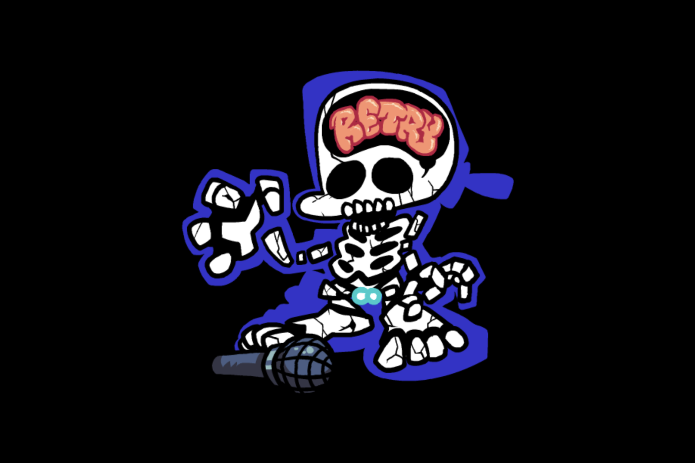
Game over: Boyfriend collapses into a skeleton with RETRY spelled out in his brain.Screenshot from my personal time playing Friday Night Funkin' (The Funkin' Crew Inc.) on itch.io.
Saw/heard: Boyfriend's death animation, ending on a skeleton with RETRY spelled out in his brain, then slow, looping game-over music.
Seemed possible: Quitting, or dropping down to Easy.
I did: Hit retry, listening to the music while watching the arrows.
Changed: I got noticeably further into the song before failing again.
Understood afterward: The music tells you when to press. The arrows show what to press; the beat shows when.
Player-action events
1
Player action
Opened the game and pressed Enter, not sure what to expect
Game response
Names and jokes flash in time with the music; the logo bounces on the beat
What I understood
This game is built around the beat, even before I play
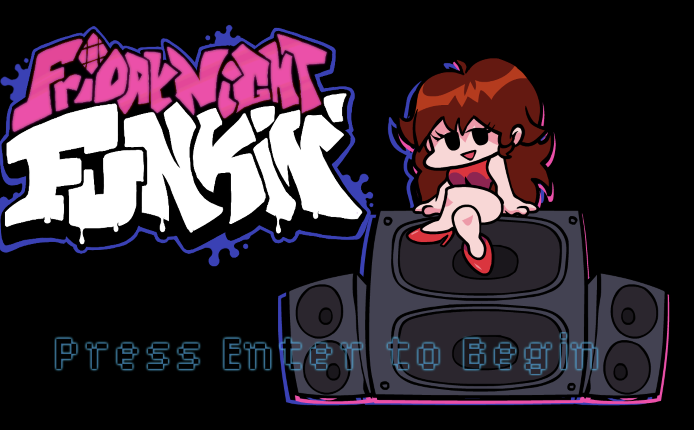
The title screen. Before I pressed anything, the logo and Girlfriend were already moving to the beat.Screenshot from my personal time playing Friday Night Funkin' (The Funkin' Crew Inc.) on itch.io.
2
Player action
Picked Week 1 on Normal without knowing what the difficulty meant
Game response
The song starts right away; arrows scroll toward four outlines
What I understood
I'm dropped in and have to learn by doing
3
Player action
Pressed arrows as soon as they appeared, too early
Game response
"Shoot" and "Bad" ratings pop up, or the note is missed
What I understood
Timing matters, and the ratings tell me how far off I was
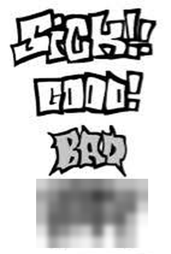
The four timing ratings, best to worst: Sick!!, Good!, Bad and "Shoot." The game's real lowest rating is a swear word, so I blurred it out and call it "Shoot" on this page.Rating art from Friday Night Funkin' (The Funkin' Crew Inc.), with the lowest rating blurred.
4
Player action
Noticed Dad sings a pattern first, then copied it
Game response
Boyfriend sings back; ratings improve to "Good" and some "Sick!!"
What I understood
I win by copying; watching Dad lets me predict my turn
My first song. Daddy Dearest sings first while my four arrows wait on the right; the health bar starts in the middle and my score is 0.Screenshot from my personal time playing Friday Night Funkin' (The Funkin' Crew Inc.) on itch.io.
5
Player action
Missed a note
Game response
Boyfriend flinches into a purple-tinted pose, a miss sound plays, his voice drops out, and the red side of the health bar grows
What I understood
Failing is something I hear, not just see
What a miss looks like: Boyfriend flinches into a purple-tinted pose, the red side of the health bar almost fills it, and his icon turns into a losing face.Screenshot from my personal time playing Friday Night Funkin' (The Funkin' Crew Inc.) on itch.io.
6
Player action
Ran out of health on DadBattle
Game response
Boyfriend collapses into a skeleton with RETRY in his brain; game-over music loops, and confirming restarts the song
What I understood
Losing sends me straight back to try again until I learn the song
Game over: Boyfriend collapses into a skeleton with RETRY spelled out in his brain.Screenshot from my personal time playing Friday Night Funkin' (The Funkin' Crew Inc.) on itch.io.
7
Player action
Tried Week 2 in the same session
Game response
New opponents and a spooky stage; lightning flashes and thunder cut in
What I understood
The stage itself can throw off my timing, not just the notes
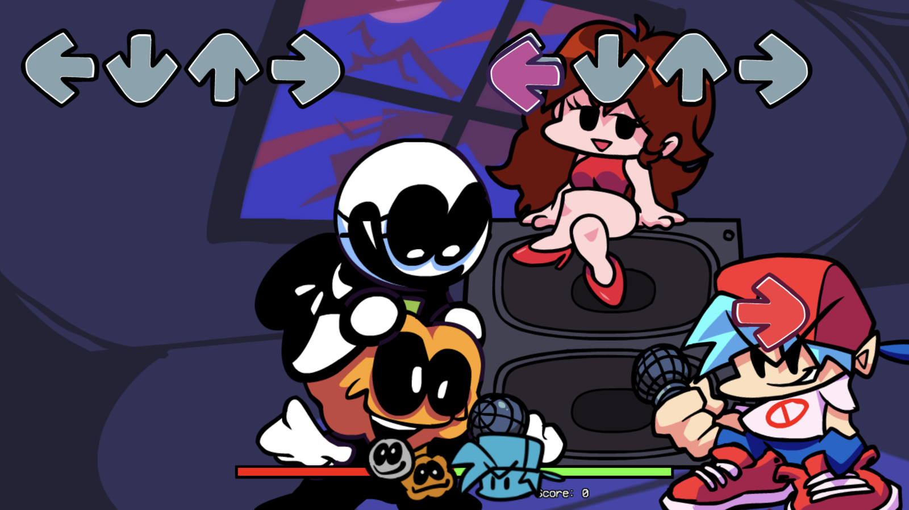
Week 2: new opponents on a darker, spookier stage, where lightning flashes cut into the song.Screenshot from my personal time playing Friday Night Funkin' (The Funkin' Crew Inc.) on itch.io.
What the creators intended vs. what I experienced
Creator statement: The official itch.io page explains the timing in one line: "press arrow when arrow over other arrow" (itch.io page).
My observation: That instruction sits below the game window. I scrolled past it and started playing without reading it, and only figured out the timing by failing.
My interpretation: The game expects players to learn the rule by doing, not reading. For a beginner, the first song is the real tutorial, and failing is part of the lesson.
Creator statement: ninjamuffin99 says he didn't care about the jam theme, "Stuck in a loop" (Newgrounds post, Nov 3, 2020).
My observation: DadBattle took me 8 tries on Normal, and even then I barely survived. Every failure ended on the same skeleton with RETRY spelled out in its brain.
My interpretation: Even if it wasn't intended, a beginner's first session is a loop: copy, fail, retry, repeat, and the game-over screen literally tells you to go again. I'm not fully sure this is unique to FNF, since most rhythm games work this way, but here the loop is the main thing I remember.
Creator statement: ninjamuffin99 compared FNF to the rhythm games Dance Dance Revolution (DDR) and PaRappa the Rapper (itch.io devlog).
My observation: I've never played DDR or PaRappa the Rapper, so I didn't know the copying rule. It clicked on about the third phrase, when I noticed Dad's arrows matched mine.
My interpretation: The game assumes some rhythm-game background. Without it, the opponent becomes the teacher: you learn by watching him first.
Creator statement: Before release, people ninjamuffin99 showed the game to said the purple arrow could blend into the backgrounds, and he described the camera zoom as something that "could feel distracting" (Newgrounds post).
My observation: At first I thought the camera bumping on the beat was lag. Later it helped me feel the rhythm. I didn't have trouble seeing the purple arrow on Week 1.
My interpretation: Something that distracts an experienced player can help a beginner, because it shows the beat visually before you can hear it properly.
Open question: I found no creator statement on why Boyfriend's voice drops out when you miss. One possible reading is that the silence acts as punishment because it accompanies a miss. Another is that it gives feedback about timing. These are interpretations, not confirmed creator intentions.
03 / DOCUMENT YOUR CRITICAL DISCUSSION WITH AI
Critical discussion with AI
AI helped me research the creators, but my beginner experience corrected its first analysis, and that correction became my core design decision.
My first impression: "I didn't know when to press. I thought the game was broken when the voice cut out. I'm unsure whether failing so much was the point."
What AI found, and what I verified
Claim from the AI research
Made for Ludum Dare 47 by ninjamuffin99, PhantomArcade, evilsk8r and Kawai Sprite
* Wiki-source note: “Verified*” means I checked that the linked Wikipedia or fan-wiki article supports the claim. These are community-edited sources; I have not independently confirmed the underlying creator account. Claims checked against creator sources are labeled “Verified (primary).”
Gaps I identified
Evidence gap. The AI's first research mixed primary sources with fan wikis and repeated claims it couldn't open. It also missed the instruction on the itch.io page I actually played on. I pushed back by sending that link: "I used this link to play: https://ninja-muffin24.itch.io/funkin" Result: it found the creators' own timing rule on that page and sorted every claim by how well it's verified.
Perspective gap. The AI read the game like an experienced player who plays through every week. I pushed back: "Center a lot of these interactions around … initial times playing or playing for a short period." Result: the events now follow a beginner: pressing too early, the first miss, the first game over.
Sensation gap. The AI described timing visually, as the arrow lining up with the outline. In my own session, I listened to the music while watching the arrows. An account of timing needs to explain how those cues work together. The review exchange below shows my correction of an analysis that overstated the role of sound.
Selected exchange: correcting the analysis during review
This excerpt is from the proposal review with Codex. The earlier dialogue was reconstructed for the brief; I corrected it rather than presenting it as a transcript of my original research discussion.
Me: "It would be more accurate to say I listened to the music and watched the arrows."
Codex: "The main issue was that several sections treated ‘sound teaches more than arrows’ as something your play session proved. I’ve corrected them to describe music and arrows working together, and framed the sound-led stages as an idea to test."
This correction separates what happened in my session from an interpretation suggested by AI. That review initially left sound-led stages as a hypothesis. I then rejected them as too far from the FNF mechanic I want: every level now keeps visible arrows, with music supporting timing. The final design decision below supersedes that earlier idea.
Two possible readings of a miss
Punishment: the silence is a penalty; losing your voice means losing the battle. Evidence: the miss sound, the flinch and the health drop happen together, and the itch.io page frames the goal as survival ("don't die").
Guidance: the voice dropping out could act as a cue that a note was missed, alongside the visual feedback. Your account describes listening to the music while watching the arrows. It does not establish that missing made the beat easier to hear or improved your performance.
No creator statement explains the voice drop, so neither reading is confirmed as intent.
My decision: I cannot conclude that silence taught me more than the arrows did. My experience involved both music and visual timing cues. For my own game, I want those cues to work together while the scenery becomes unreliable.
What changed my thinking
What AI helped me notice: The creators' timing rule was on the page I played on, and I skipped it. Also, no creator statement explains why the voice drops on a miss; that's an open question, not a fact.
What I challenged: The AI read the game like an experienced player and described timing visually. My own account involves listening to the music and watching the arrows together. I also corrected the reconstructed discussion: it overstated the role of drums and presented a possible interpretation as something I had experienced.
My conclusion: For me, learning FNF involved trying again and combining the music with the arrows. The music and setting also contributed to the story, even though the characters did not necessarily feel connected. These observations suggest two directions for my game: keep the arrows and music working together, and give each battle a distinct musical and visual theme.
How I'll use it (design decision): Every stage uses visible directional notes scrolling toward fixed arrow targets, as in FNF. The arrows show which key to press and when; music helps the player feel the timing. Each battle gets its own music, setting and note patterns within the connected walk home. I will test whether players can read the notes comfortably as the surrounding world becomes more distorted.
04 / EXPLAIN YOUR NARRATIVE AND CONCEPT
Narrative and concept
A walk home at 2:47 a.m. through an unreliable world, guided by clear arrows and the rhythm of the music.
My interpretation of Hallucination: For this game, Hallucination means seeing distortions and figures that may not be there. In Hallucination Hysteria, the scenery becomes unreliable, but the playable arrows and their timing remain trustworthy.
This develops an idea from my Friday Night Funkin' case study: I listened to the music while watching the arrows. Hallucination Hysteria keeps those cues working together. The challenge is to follow visible arrow patterns while the surrounding world changes. The hallucination belongs to the setting and story, not to hidden directions or a requirement to play by ear.
One rule keeps it fair: distortion never changes the beat or playback speed within a stage. Different stages use tracks with different tempos. Distortion changes what you see and adds sounds on top of the music, but it never changes when the beat lands. Directional notes and targets stay sharp, visible and fixed in their lanes. The player never has to identify a direction by pitch or memorize an unseen pattern.
The world: One unnamed city at 2:47 a.m., on a walk home that should take ten minutes. Dim orange streetlights, buzzing shop signs, an empty bus stop, and a small apartment at the top of narrow stairs. It's drawn as a dark cartoon in the spirit of Friday Night Funkin', with bold outlines and night colors. Nothing explains why the world is wrong tonight; the player is left to wonder.
The player's role: You are the Walker, a young person in a hoodie with headphones on, trying to get home. The music in your headphones is the beat you play to, and, together with the arrows, helps keep you grounded.
Character
The Walker (you)
Who they are
Unnamed, headphones on, walking home
What happens when you lose the beat
Your voice drops out of the song, like Boyfriend's in FNF
Character
The Stranger
Who they are
Someone waiting at the bus stop who somehow knows your name; speaks in beeps
What happens when you lose the beat
Their face slides and stretches; their words scramble
Character
The Reflection
Who they are
Your own reflection in your bedroom mirror
What happens when you lose the beat
It stops copying you and starts leading
How it plays:
Something in the world sings a pattern first: a streetlight flickering, the Stranger's beeps, your Reflection. Then the same arrows scroll toward your four targets, and you press each one as it lines up with its outline, on the beat. Character tones accompany the visible patterns; recognizing a pitch is never required to choose a key.
The clarity meter works like FNF's health bar, and it starts in the middle, so you begin half-hallucinated. On-beat hits push it toward Clear; misses and ghost-note hits push it toward Lost.
Ghost notes are hollow, dashed-outline decoys, visually distinct from the solid playable arrows. They have no call tone. Hitting one costs clarity; letting it pass costs nothing. Their shape and outline identify them without requiring sound.
No written instructions: the opening teaches the rule by doing, a design decision that came out of my case study.
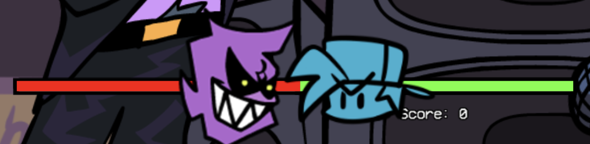
FNF's health bar at the start of a song: half red, half green. My clarity meter starts the same way, so the player begins half-hallucinated.Screenshot from my personal time playing Friday Night Funkin' (The Funkin' Crew Inc.) on itch.io.
Clarity
Clear (right end)
What you see
Sharp image, true colors, a steady interface
What you hear
Clean music
Clarity
Starting point (middle)
What you see
Soft blur, colors slightly off, shapes moving at the edge of the screen
What you hear
Music slightly muffled, faint whispers
Clarity
Lost (left end)
What you see
Heavy warping in the scenery; the note lanes remain steady and clear, with occasional hollow, dashed ghost notes
What you hear
Muffled music; whispers and footsteps that aren't there
Clarity
Empty
What you see
The screen warps fully and fades out
What you hear
The stage restarts from the top
How my references informed it: Friday Night Funkin' gave me the call-and-response mechanic and the split-screen layout. Vib-Ribbon showed me that a game can display your performance by changing the picture itself. Hopper's Nighthawks gave me the lonely, light-and-dark night city.
How the story develops:
Arrive: you wake on a blurred street (the opening)
Wonder: the streetlights sing the beat (Stage 1)
Doubt: a Stranger at the bus stop knows your name (Stage 2)
Change: the room distorts around your Reflection while you follow the visible arrows (Stage 3)
Leave: you get home clear, or lost (the endings)
The experience I want to create: Uneasy but never helpless: the world is unreliable, but the beat is always there to hold on to.
At the start, uncertainty: the street is blurred, but a clear scrolling arrow introduces the timing.
In the middle, doubt: the scenery and characters look increasingly wrong, while the arrows and music remain consistent guides.
At the end, relief or loss: the player either earns a clear, quiet morning or watches their reflection take over the song.
What the player carries away: You can't always trust what you see, but you can hold on to a rhythm. A player who fails should want to retry, because each attempt makes the world a little clearer.
05 / SHOW THE INTERACTION AND PLAYER JOURNEY
Interaction and player journey
One action throughout: press the matching arrow key when a visible note meets its target, as in FNF. Music supports timing; each stage changes the theme and patterns, not the basic controls.
Clarity decides which ending you reach.
Opening: Wake up Arrive · a blurred street
↓
Stage 1: The street Wonder · flickering lights
↓
Stage 2: The Stranger Doubt · a face that slides
↓
Stage 3: Your room Change · face the Reflection
↓
Clarity past the middle, on the Clear side?
Yes ↓ Clear ending Leave · the room settles ↶ Play again → Opening
No ↓ Lost ending Leave · the reflection sings on ↶ The walk starts over → Opening
Stages 1, 2, 3 → clarity runs out → Restart that stage (like FNF's game over)
Opening: Wake up: Arrive · a blurred street
Stage 1: The street: Wonder · flickering lights
Stage 2: The Stranger: Doubt · a face that slides
Stage 3: Your room: Change · face the Reflection
Clarity past the middle, on the Clear side? Yes: Clear ending, Leave, the room settles. No: Lost ending, Leave, the reflection sings on.
If clarity runs out in Stage 1, 2 or 3, restart that stage, like FNF's game over.
Clear ending: play again from the opening. Lost ending: the walk starts over from the opening.
Each box names the part of the game, its beat in my narrative arc from Part 04, and what the player sees.
If clarity runs out in any stage, the screen warps out and that stage restarts from the top, like FNF's game-over loop. One roughly minute-long excerpt per stage keeps a first session short. The full licensed recordings are longer; the prototype will use charted excerpts with deliberate start and end points.
Stage plan
Enter
Opening: Wake up
Lesson step
Enter
Goal
Find the beat
What's new
Against the blurred street, an arrow scrolls toward its matching target. Pressing as they line up sharpens the street a little.
What the player understands after
"Pressing on the beat makes things clearer."
Notice
Stage 1: The street
Lesson step
Notice
Goal
Copy the lights
What's new
Streetlights accompany a short visible call-and-response pattern. Solid arrows scroll toward the player’s targets. A rare hollow, dashed ghost note introduces a visually distinct decoy.
What the player understands after
"I press the matching key as each solid arrow meets its target, and ignore hollow, dashed decoys."
Explore
Stage 2: The Stranger
Lesson step
Explore
Goal
Answer the Stranger
What's new
The Stranger performs visible patterns with more changes of direction and short hold notes. The player follows fully drawn arrows using the same four keys. Hits bring the Stranger’s face into focus; misses distort the face, not the notes.
What the player understands after
"The arrows still tell me what to press; the music helps me time the new patterns."
Reconsider
Stage 3: Your room
Lesson step
Reconsider
Goal
Face the Reflection
What's new
The Reflection performs longer visible phrases that combine the direction changes and holds learned earlier. The room darkens and warps behind the note lanes, but every playable arrow and target stays clear.
What the player understands after
"I can keep following the arrows and music even when the room looks wrong."
Leave
Endings
Lesson step
Leave
Goal
Get home clear
What's new
Your clarity at the end of the last song decides the Clear or Lost ending.
What the player understands after
See below.
What the screen shows, stage by stage
Every stage keeps the caller’s arrows, the player’s directional notes and all four targets visible. The settings and patterns develop from one battle to the next; the controls stay the same.
Opening
The call
A short visual timing demonstration
Your notes
A scrolling directional arrow and four fixed targets
Ghost notes
None
You rely on
The visible arrow alignment, supported by the beat
Stage 1: The street
The call
Shown in the caller’s lane, accompanied by music and streetlight motion
Your notes
Full arrows, as in FNF
Ghost notes
Rare: hollow, dashed-outline decoys with no call tone
You rely on
Eyes, with sound alongside
Stage 2: The Stranger
The call
Shown in the Stranger’s lane and accompanied by their beeps
Your notes
Full directional arrows, including short hold notes
Ghost notes
Hollow, dashed-outline decoys; recognizable without sound
You rely on
Visible arrow alignment, supported by music
Stage 3: Your room
The call
Shown throughout in the Reflection’s lane
Your notes
Full directional arrows and holds, visible even when the room darkens
Ghost notes
None; focus on combining the learned arrow patterns
You rely on
Visible arrow alignment and music, with scenery kept behind the lanes
Endings
Both endings let the player begin again, in different ways: the Clear ending offers a fresh start, while the Lost ending drops you back on the street, stuck in the loop.
Final image
Clear ending
Soft morning light in the room. The mirror shows only the Walker, who takes off their headphones.
Lost ending
The room stays warped and dark. The Walker stands silent while the Reflection keeps singing.
Final sound
Clear ending
The battle excerpt fades into quiet room tone, then Faded Dream fades in.
Lost ending
Acid Trance continues with the separately generated Reflection tones; the Walker tones stop.
Final action
Clear ending
Press any arrow on the beat to play again.
Lost ending
None: the screen fades to the blurred street at 2:47 a.m., and the walk starts over.
Final thought
Clear ending
"I made it home."
Lost ending
"Was any of it real?"
The Lost ending's loop is a deliberate nod to my case study: Friday Night Funkin' was made for a jam themed "Stuck in a loop," and failing and retrying was the loop I actually experienced.
Storyboard
FRAME 01
Entry (Opening)
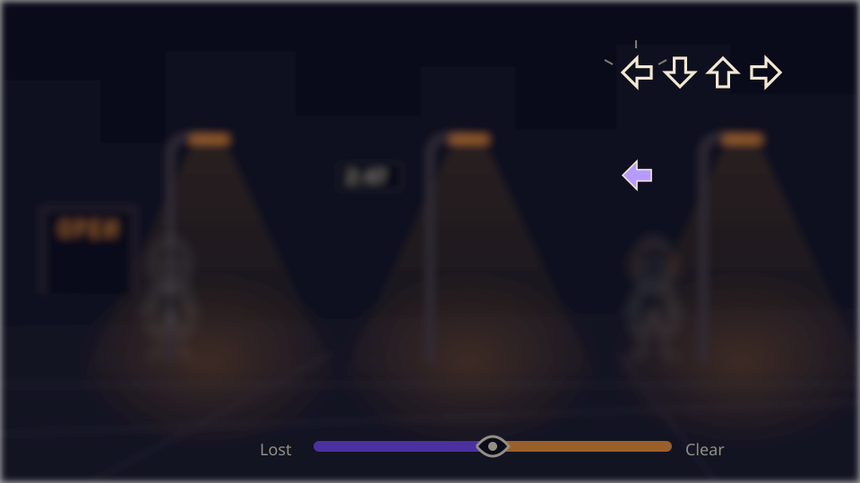
Goal
Find the beat
Input
Press the matching key when the arrow meets its target
Feedback
A soft tone; the blur lifts a little and one streetlight flickers on
Next
After a few on-beat presses, the first song starts with short four-lane patterns
FRAME 02
First action (Stage 1: The street)
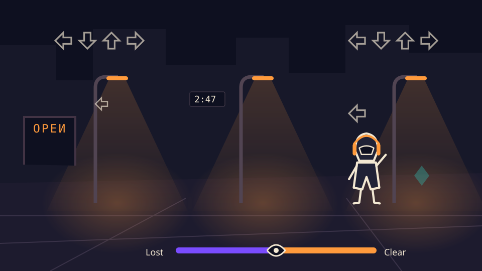
Goal
Copy the call
Input
Arrow keys on the beat
Feedback
The target flashes orange, the Walker sings and the street sharpens. A miss blurs the edges and mutes the Walker's voice.
Next
A hollow, dashed ghost note appears; its outline identifies it as a decoy, and letting it pass costs nothing
FRAME 03
New response (Stage 2: The Stranger)
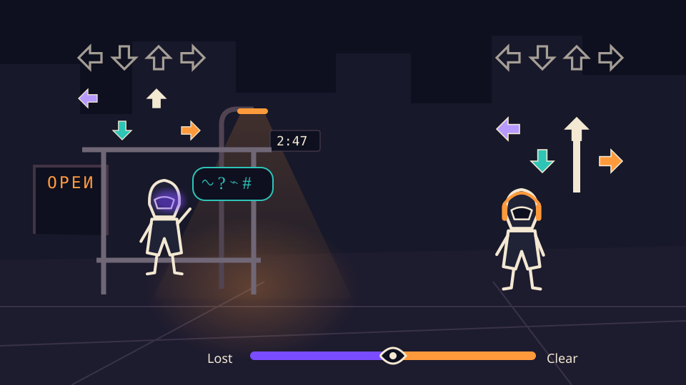
Goal
Follow the Stranger’s visible pattern
Input
Match the visible arrows; hold a key for the length of a hold note
Feedback
A right answer brings the face into focus and turns one word in the bubble readable: your name. A wrong one makes the face slide sideways.
Next
The bus never comes; the Stranger points up the street toward home
FRAME 04
Discovery (Stage 3: Your room)
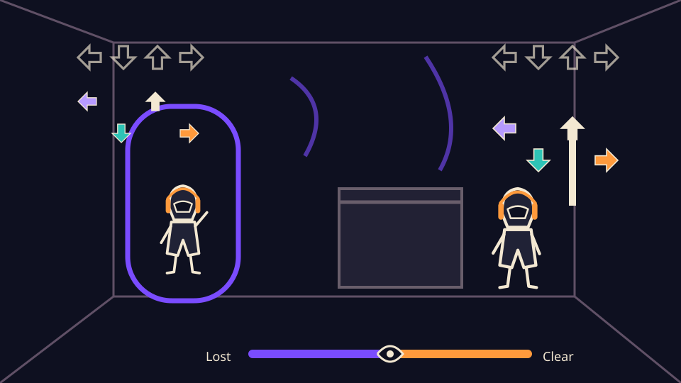
Goal
Complete the Reflection’s visible pattern
Input
Match the visible arrows and holds in time with the music
Feedback
Each correct press lights its target and raises clarity; the room steadies while the arrow lanes remain fixed
Next
The final bars play, then the ending check
FRAME 05
Clear ending
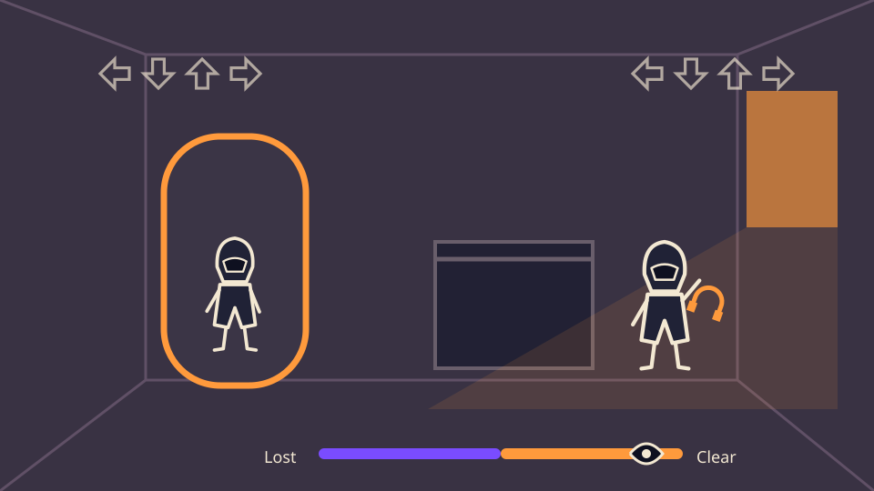
Goal
Get home clear
Input
Press any arrow on the beat
Feedback
The battle excerpt fades into quiet room tone, then Faded Dream fades in
Next
Play again from the opening
FRAME 06
Lost ending
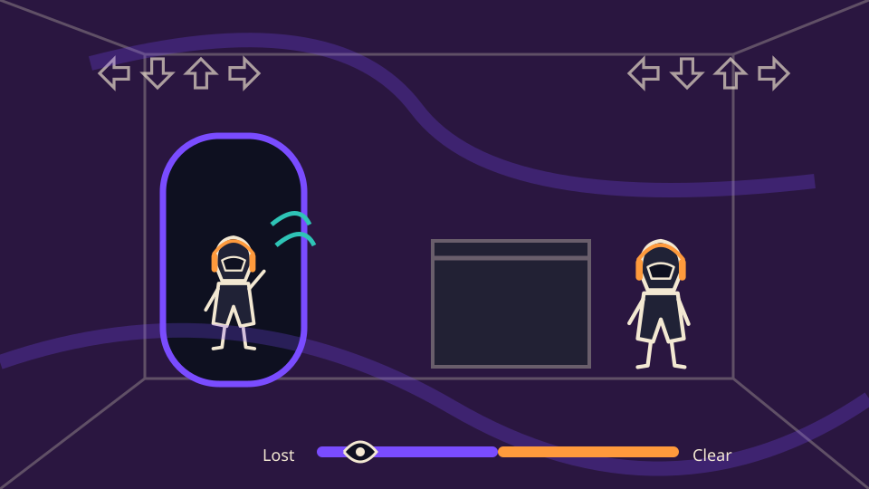
Goal
(none)
Input
No input
Feedback
The music continues without the Walker's voice
Next
Fades to the blurred street at 2:47 a.m.; the walk begins again
06 / PRESENT A STYLE AND SOUND GUIDE
Style and sound guide
Warm orange means real; violet and teal mean doubt. The arrows guide each press, and the music supports timing.
Annotated references
Reference
Friday Night Funkin' (2020–)
Creator and source
ninjamuffin99, PhantomArcade, evilsk8r, Kawai Sprite / The Funkin' Crew Inc. · itch.io page
What it teaches me
A readable split screen: opponent on the left, player on the right, arrows at the top and a two-sided bar at the bottom. Bold outlines keep characters clear while they animate.
How I'll use it
The same layout, with FNF's health bar becoming my clarity meter. Dark-cartoon characters with thick outlines, lit for night.
The title screen. Before I pressed anything, the logo and Girlfriend were already moving to the beat.Screenshot from my personal time playing Friday Night Funkin' (The Funkin' Crew Inc.) on itch.io.
Simple white lines on black form crude, angular drawings of the course and the rabbit Vibri. Hit too many obstacles and Vibri degenerates from a rabbit into a frog, then an insect; clear enough in a row and she evolves into Super Vibri. The game shows your performance by changing the picture, not just a number.
How I'll use it
Clarity works the same way, but on the whole world: the better you play, the cleaner and steadier the scene. Its influence also reaches me through FNF, whose beeping voices were reportedly inspired by Vib-Ribbon.
Reference
Nighthawks (1942)
Creator and source
Edward Hopper · The Art Institute of Chicago, Friends of American Art Collection, 1942.51 · Google Arts & Culture
What it teaches me
Customers sit in a harshly lit diner on an empty city corner at night. Small figures in one pool of light, surrounded by dark, make the city feel lonely and still.
How I'll use it
The Walker as a small figure moving between pools of streetlight, with large dark spaces where hallucinations can appear.
Reference
FNF's sound
Creator and source
Music by Kawai Sprite (Isaac Garcia), who based the songs on PaRappa the Rapper · Wikipedia. The beeps and the voice drop-out are from my own session (Part 02)
What it teaches me
Characters "sing" in short beeps instead of words, and a miss drops the player's voice out of the song.
How I'll use it
Call tones in beeps, one pitch per arrow, and silence as the signal that you've lost your voice.
Color
Night#0E1020
Page background
Streetlight#FF9A3C
Real, clear
Ink#F3E8D2
Body text and headings
Hallucination#7A4CFF
Losing clarity
Ghost#2EC4B6
Not real
Deep Lost#2A1640
Panels and contrast
The color rule is simple: warm orange means real, and violet and teal mean doubt. As clarity drops, the orange streetlight fades and violet creeps in from the edges of the screen.
My own miss screenshot shows FNF tinting Boyfriend purple when he misses. My violet for losing clarity follows the same instinct: failure gets its own color.
Imagery and composition
A wide 16:9 scene, following Nighthawks: the Walker is a small figure moving between pools of streetlight, with large dark areas where hallucinations can appear. Characters get thick outlines and simple shapes, as in FNF. Backgrounds stay flatter and darker than the characters, so the arrows always read clearly.
Typography
One clean sans-serif for everything, Space Grotesk. The title, Hallucination Hysteria, is set with a faint, offset copy behind it, a "ghost" of the letters. The game shows almost no text. When clarity drops, letters shift, swap and split into color layers; at full clarity, the type holds perfectly still.
Interface and motion
Arrows: all stages use four clearly drawn directions in fixed lanes, with violet, teal, cream and orange accents and bright outlines against dark lane panels. Shape and position identify direction without relying on color. Solid notes are playable; hollow, dashed-outline ghost notes are decoys. Hits light the matching target. Blur, warping, dimming and camera movement affect the scenery only, never the note lanes or targets.
Clarity meter: a bar along the bottom center, violet on the left (Lost) and orange on the right (Clear). The marker is a small eye that opens wide near Clear and squints shut near Lost. It starts in the middle.
Beat motion: the background gives a small bump on each bar, as in FNF, while the note lanes stay fixed. It stays gentle, since FNF's own programmer worried that camera zoom could feel distracting.
Effect
Blur
Clear
None
Middle (start)
Soft
Lost
Heavy
Effect
Color
Clear
True colors, warm orange light
Middle (start)
Slightly faded, violet at the edges
Lost
Violet and teal wash; orange almost gone
Effect
Screen motion
Clear
Steady, with only a gentle background beat bump
Middle (start)
Slow background drift and sway; steady note lanes
Lost
Scenery wobbles and warps; the note lanes remain fixed
Effect
Type
Clear
Still
Middle (start)
Occasional letter swaps
Lost
Scrambled, split into color layers
Effect
World
Clear
As it should be
Middle (start)
Shapes move at the edge of the screen
Lost
Figures appear, signs change, furniture shifts
Accessibility: a reduced-motion setting turns off the sway and warp but keeps the blur and color shifts, so the meaning stays. A warning and a toggle cover flashing light, such as the flickering streetlights and the room’s background distortions.
Music
BPM means beats per minute: the tempo listed by the composer.
Soundtrack direction: dreamlike and uncanny, with a rhythmic foundation for visible arrows. The progression moves from eerie street ambience to a stranger, warped soundscape, then a hypnotic electronic confrontation. Music reinforces timing and atmosphere; no direction must be identified by sound.
The soundtrack is four human-composed tracks by Shane Ivers of Silverman Sound Studios, all free under CC BY 4.0. The composer lists Stage 1 and Stage 2 at 91 BPM and Stage 3 at 115 BPM. Stage 2 adds direction changes and holds at the same tempo; Stage 3 adds longer patterns and a faster pulse. These are listed tempos, not finished note charts: the prototype will verify each excerpt’s beat offset and timing.
Part
Stage 1: The street
Track
Dream Aeterna
BPM
91
Why it fits
Haunting choir, bells and low synth bass suggest a familiar street turning dreamlike. Sparse opening arrow patterns leave space to learn the timing.
Part
Stage 2: The Stranger
Track
The Other Place
BPM
91
Why it fits
Reversed and warped textures over a heartbeat-like pulse suit the Stranger’s unsettling presence. The arrow chart follows the underlying pulse, not each unpredictable background sound.
Part
Stage 3: Your room
Track
Acid Trance
BPM
115
Why it fits
Pulsing synth bass and sparse drums give the Reflection a hypnotic, psychedelic battle theme. The stronger electronic drive supports longer visible arrow phrases while the room distorts.
Part
Clear ending
Track
Faded Dream
BPM
86.5
Why it fits
Gentle choir, bells and woodwinds soften the dreamlike mood into relief. This is an ending cue, not a fourth battle.
Part
Opening and Lost ending
Track
(no new track)
Why it fits
A beat pulse generated in code introduces the opening. The Lost ending continues the selected Acid Trance excerpt with a low-pass effect and without the separately generated Walker tones; the licensed recording itself is not a set of isolated character stems.
Sound, silence and rhythm
Every action gets a sound, and silence carries meaning: losing your voice means you've slipped, and quiet at the end means you've made it.
Moment
The call
What the player hears
Short beeps, one pitch per arrow, low on the left to high on the right
Moment
Your hit
What the player hears
Your own beep at the same pitch, right on the beat
Moment
A miss
What the player hears
A dull, muffled thud; the Walker's voice drops out until the next hit
Moment
Hitting a ghost note
What the player hears
A sour, slightly detuned tone
Moment
Losing clarity
What the player hears
The music muffles, and whispers and footsteps that aren't there fade in
Moment
Gaining clarity
What the player hears
The music opens up and brightens; the hum of the orange streetlights returns
Moment
The Stranger's call
What the player hears
Lower, slightly warbling beeps
Moment
Room distortion
What the player hears
The music continues with a steady beat while room ambience becomes stranger; arrow hits still have clear feedback
Moment
Clear ending
What the player hears
The battle excerpt fades into quiet room tone, then Faded Dream fades in
Moment
Lost ending
What the player hears
The selected Acid Trance excerpt continues, muffled, with Reflection tones while the Walker tones stop
Most effects are generated in code, so they stay in sync and need no license. I'll record my own whispers and footsteps.
07 / DESCRIBE YOUR TWO-WEEK BUILD PLAN
Two-week build plan
Week 2 builds the playable game in priority order; Week 3 tests it with first-time players, refines it and publishes it.
Tools: plain HTML, CSS and JavaScript with the Web Audio API, built with Codex and hosted on GitHub Pages, like this portfolio.
Week 2: build the playable prototype
Built in priority order, so there is always a playable version:
Rhythm core: play a track, keep the notes in sync with the audio clock, four lanes on the arrow keys or WASD, timing windows, and call tones with one pitch per arrow.
Record mode: tap along to a selected excerpt to draft its note chart, then verify the beat offset, timing and holds. Check the pulse in Dream Aeterna and The Other Place before charting; their atmospheric details must not become unpredictable required notes.
Clarity meter: starts in the middle; hits raise it, and misses and ghost-note hits lower it. Blur, color and sway scale with it, and an empty meter restarts the stage.
Opening and Stage 1 (The street): fully playable by mid-week, including rare ghost notes.
Stage 2 (The Stranger): visible direction changes and short holds, with the Stranger’s bus-stop theme.
Stage 3 (Your room): the room’s background distortions.
Both endings and the replay loop, plus a credits screen.
Art in Week 2 uses simple shapes and silhouettes in the final palette; detailed character art comes only once all stages work.
If I fall behind: shorten each song to about 45 seconds, keep the characters as silhouettes, and simplify the endings to two illustrated screens. The core idea—following visible arrows through three differently themed battles—stays.
Week 3: test, refine, publish
Playtest with at least three first-time players, without explaining anything. I'll watch and note whether they find the beat in the opening, discover the copying rule, can follow direction changes and holds in Stage 2, and where they fail. I’ll also check that visual decoys are distinguishable without audio and that scenery never obscures notes.
Tune timing windows, how fast clarity rises and falls, ghost-note frequency, phrase length, hold-note duration and background distortion.
Add settings: volume, reduced motion and a flashing-light toggle.
Polish art and sound, including my recorded whispers and footsteps.
Publish on GitHub Pages, link it from this proposal and my portfolio, and test it on another computer and browser.
What success looks like: a first-time player finds the beat in the opening with no text at all; most testers reach Stage 3 within three tries; and testers describe the world as feeling wrong while the arrows remained readable and the music supported their timing.
Edward Hopper, Nighthawks (1942), The Art Institute of Chicago: Google Arts & Culture
Music (CC BY 4.0; previews excerpted from 0:20–0:50 with one-second fades; the clarity slider can apply a low-pass filter)
Music: Dream Aeterna by Shane Ivers - https://www.silvermansound.com
Music: The Other Place by Shane Ivers - https://www.silvermansound.com
Music: Acid Trance by Shane Ivers - https://www.silvermansound.com
Music: Faded Dream by Shane Ivers - https://www.silvermansound.com
Type: Space Grotesk via Google Fonts.
AI tools: Claude (Anthropic) helped with research and organizing; Codex (OpenAI) built and updated this page. All artwork on this page is original, except my FNF screenshots and the FNF rating art, both credited above.